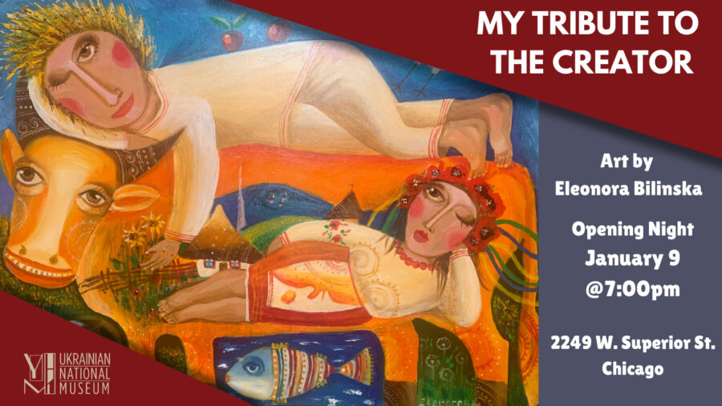

Eleonora Bilinska: MY TRIBUTE TO THE CREATOR
This exhibition is a personal and spiritual tribute to Jesus Christ — the source of inspiration and light for the artist Eleonora Bilinska.
Each painting carries not only an artistic title but also a dedication to a specific person, community, or meaningful theme in human existence.
It is an artistic message to the viewer — warm, bright, and at the same time deeply philosophical — evoking feelings of joy, hope, love, and faith.
The centerpiece of the exhibition is the painting “You Know, and the Stars Also Sing”, which the artist dedicated to Ukrainians of Chicago – a symbol of light and unity within the Ukrainian diaspora. Ця виставка – особиста і духовна подяка Ісусу Христу, джерелу натхнення й світла для художниці Елеонори Білінської. Кожна картина тут має не лише художню назву, а й посвяту – конкретній людині, спільноті чи важливій темі людського буття. Це мистецьке послання до глядача – тепле, сонячне й водночас глибоко філософське, що пробуджує почуття радості, надії, любові та віри. Особливою картиною експозиції стала центральна робота «Ти знаєш, а зорі також співають», яку мисткиня присвятила українцям Чикаго – символу світла й єдності української діаспори.
Admission: $10